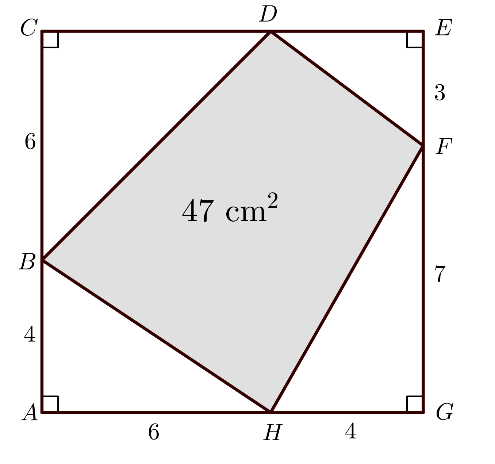
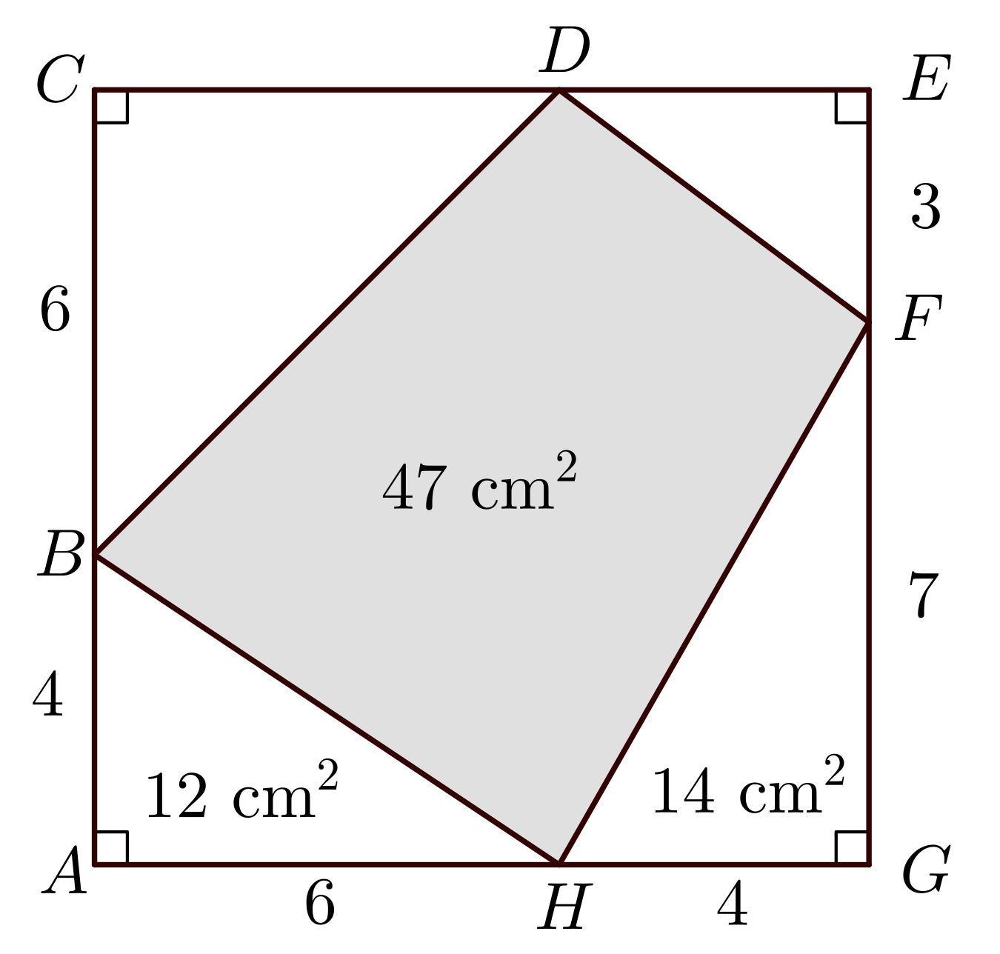

Problem
Quadrilateral \(BDFH\) is constructed so that each vertex is on a different side of square \(ACEG\). Vertex \(B\) is on side \(AC\) so that \(AB=4\text{ cm}\) and \(BC=6\text{ cm}\). Vertex \(F\) is on \(EG\) so that \(EF=3\text{ cm}\) and \(FG=7\text{ cm}\). Vertex \(H\) is on \(GA\) so that \(GH=4\text{ cm}\) and \(HA=6\text{ cm}\). The area of quadrilateral \(BDFH\) is \(47\text{ cm}^2\).
The fourth vertex of quadrilateral \(BDFH\), labelled \(D\), is located on side \(CE\) so that the lengths of \(CD\) and \(DE\) are both positive integers.
Determine the lengths of \(CD\) and \(DE\).

Solution
Solution 1
Since \(ACEG\) is a square and the length of
\(AG=AH+HG=6+4=10\) cm, then the length of each side of the square is \(10\text{ cm}\) and the area is \(10\times 10 = 100\text{ cm}^2\).
We can determine the area of triangles \(BAH\) and \(FGH\) using the formula \(\text{area} = \frac{\text{base}\times\text{height}}{2}\).
In \(\triangle BAH\), since \(BA\) is perpendicular to \(AH\), we can use \(BA\) as the height and \(AH\) as the base. The area of \(\triangle BAH\) is \(\frac{6\times 4}{2}=12\text{ cm}^2\).
In \(\triangle FGH\), since \(FG\) is perpendicular to \(GH\), we can use \(FG\) as the height and \(GH\) as the base. The area of \(\triangle FGH\) is \(\frac{4\times 7}{2}=14\text{ cm}^2\).
The area of \(\triangle BCD\) plus the area of \(\triangle FED\) must be the total area minus the three known areas. That is, \(\text{Area }\triangle BCD +\text{Area }\triangle FED=100-12-47-14=27\text{ cm}^2\).

\(CD\) and \(DE\) are both positive integers and \(CD+DE=10\). We will systematically check all possible values for \(CD\) and \(DE\) to determine the values which produce the correct area.
| \(CD\) | \(DE\) | Area\(\ \triangle BCD\) | Area\(\ \triangle FED\) | Area \(\triangle BCD\ +\) Area \(\triangle FED\) |
|---|---|---|---|---|
| 1 | 9 | \(1\times 6 \div 2=3\) | \(9\times 3\div 2=13.5\) | \(3+13.5=16.5\not=27\) |
| 2 | 8 | \(2\times 6 \div 2=6\) | \(8\times 3\div 2=12\) | \(6+12=18\not=27\) |
| 3 | 7 | \(3\times 6 \div 2=9\) | \(7\times 3\div 2=10.5\) | \(9+10.5=19.5\not=27\) |
| 4 | 6 | \(4\times 6 \div 2=12\) | \(6\times 3\div 2=9\) | \(12+9=21\not=27\) |
| 5 | 5 | \(5\times 6 \div 2=15\) | \(5\times 3\div 2=7.5\) | \(15+7.5=22.5\not=27\) |
| 6 | 4 | \(6\times 6 \div 2=18\) | \(4\times 3\div 2=6\) | \(18+6=24\not=27\) |
| 7 | 3 | \(7\times 6 \div 2=21\) | \(3\times 3\div 2=4.5\) | \(21+4.5=25.5\not=27\) |
| 8 | 2 | \(8\times 6 \div 2=24\) | \(2\times 3\div 2=3\) | \(24+3=27\) |
| 9 | 1 | \(9\times 6 \div 2=27\) | \(1\times 3\div 2=1.5\) | \(27+1.5=28.5\not=27\) |
Therefore, when \(CD=8\) cm and \(DE=2\) cm, the area of quadrilateral \(BDFH\) is \(47\text{ cm}^2\).
The second solution is more algebraic and will produce a solution for any lengths of \(CD\) and \(DE\) between \(0\) and \(10\) cm.
Solution 2
This solution begins the same as Solution 1. Algebra is introduced to complete the solution.
Since \(ACEG\) is a square and the length of \(AG=AH+HG=6+4=10\) cm, then the length of each side of the square is \(10\text{ cm}\) and the area is \(10\times 10=100\text{ cm}^2\).
We can determine the area of the triangles \(BAH\) and \(FGH\) using the formula \(\frac{\text{base}\times\text{height}}{2}\).
In \(\triangle BAH\), since \(BA\) is perpendicular to \(AH\), we can use \(BA\) as the height and \(AH\) as the base. The area of \(\triangle BAH\) is \(\frac{6\times 4}{2}=12\text{ cm}^2\).
In \(\triangle FGH\), since \(FG\) is perpendicular to \(GH\), we can use \(FG\) as the height and \(GH\) as the base. The area of \(\triangle FGH\) is \(\frac{4\times 7}{2}=14\text{ cm}^2\).
The area of \(\triangle BCD\) plus the area of \(\triangle FED\) must be the total area minus the three known areas. That is, \(\text{Area }\triangle BCD +\text{Area }\triangle FED=100-12-47-14=27\text{ cm}^2\).
Let the length of \(CD\) be \(n\) cm. Then the length of \(DE\) is \((10-n)\) cm.
The area of \(\triangle BCD\) is \(\dfrac{BC\times CD}{2}=\dfrac{6\times n}{2}=3n\).
The area of \(\triangle FED\) is \(\dfrac{FE\times DE}{2}=\dfrac{3\times (10-n)}{2}=\dfrac{10-n+10-n+10-n}{2}=\dfrac{30-3n}{2}\).
Therefore, \[\begin{aligned} \text{Area }\triangle BCD+\text{Area }\triangle FED&=27\\ 3n+\frac{30-3n}{2}&=27\\ 6n+30-3n&=54 & \text{(multiplying both sides by 2)} \\ 3n+30&=54\\ 3n&=24\\ n&=8\\\end{aligned}\]
Therefore, the length of \(CD\) is \(8\) cm and the length of \(DE\) is \(2\) cm.
The algebra presented in Solution 2 may not be familiar to all students at this level.